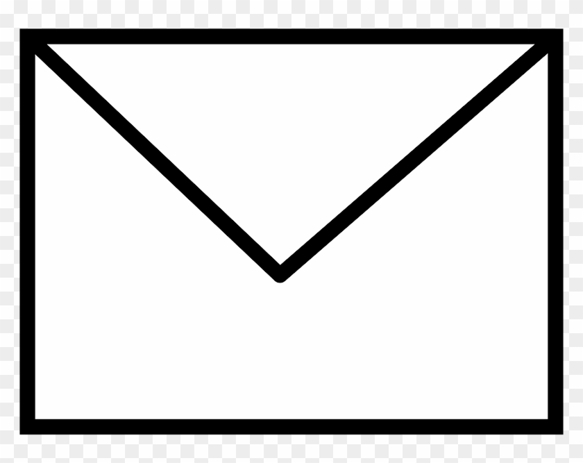

A number of people will review your application on various criterion depending on the specific application. Typically, the reviewers provide some official notes and scoring that will be returned to you upon completion of the review process. Now initially, these comments can make you feel some type of way, but the feedback is generally quite useful. While grants are highly competitive, many of them allow you to apply more than once. Thus reviewer comments can help give you an edge as you can find your weaknesses and come up with a plan to strengthen them by the next application cycle. In fact in some applications, there is a specific prompt for you to complete if it is a resubmission and you must make your case showing where you improved from the previous application. The key is not to take anything personal and try to be constructive with each comment.
Easy improvements
